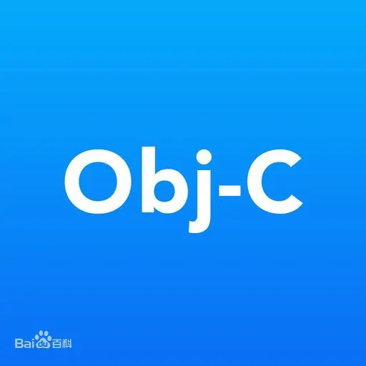

Objective-C

Objective-C，通常写作ObjC或OC和较少用的Objective C或Obj-C，是扩充C的面向对象编程语言。 它主要使用于Mac OS X和GNUstep这两个使用OpenStep标准的系统，而在NeXTSTEP和OpenStep中它更是基本语言。
发展历程
1980年代初布莱德·考克斯(Brad Cox)在其公司Stepstone发明Objective-C。他对软件设计和编程里的真实可用度问题十分关心。 Objective-C最主要的描述是他1986年出版的书 Object Oriented Programming: An Evolutionary Approach. Addison Wesley. ISBN 0-201-54834-8.
语言特点
Objective-C是非常实用的语言。它是一个用C写成很小的运行库， 令应用程序的尺寸增加很小，和大部分OO系统使用极大的VM执行时间会取代了整个系统的运作相反, Objective-C写成的程序通常不会比其原始码大很多。 而其函式库(通常没附在软件发行本)亦和Smalltalk系统要使用极大的内存来开启一个窗口的情况相反。 因此，Objective-C它完全兼容标准C语言（C++对C语言的兼容仅在于大部分语法上， 而在ABI（Application Binary Interface）上， 还需要使用extern "C"这种显式声明来与C函数进行兼容， 而在此基础上增加了面向对象编程语言的特性以及Smalltalk消息机制。
Objective-C的最初版本并不支持垃圾回收,在当时这是争论的焦点之一。 很多人考虑到Smalltalk回收时有漫长的死亡时间，令整个系统失去功用。 Objective-C为避免此问题才不拥有这个功能。 虽然某些第三方版本已加入这个功能(尤是GNUstep), Apple在其Mac OS X 10.3中仍未引入这个功能。
虽然Objective-C是C的超集，但它不是C的基本类型为第一级的对象。